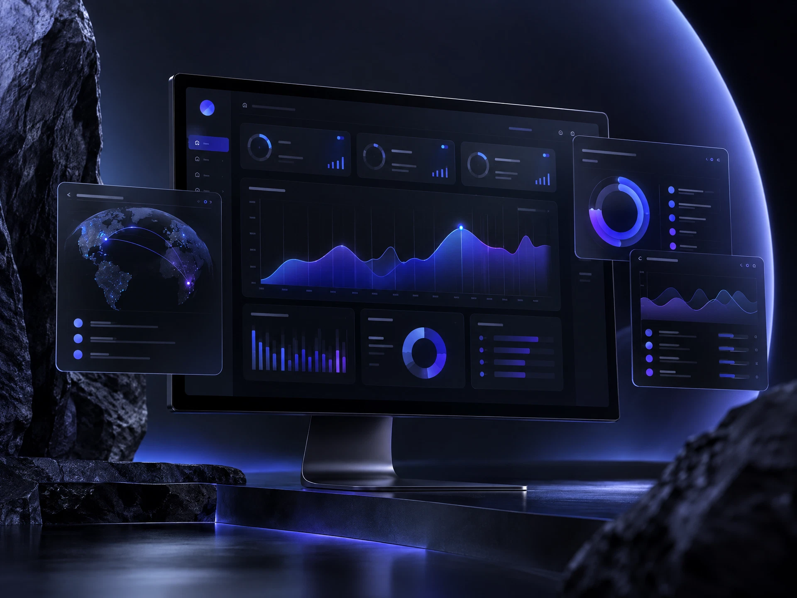

Nova dashboard
Product design • UI/UX
Ashish Manocha studio
A closer look at the products, campaigns, edits, and tools behind the studio.
Selected work
A rotating selection of digital products, campaigns, edits, and tools built to earn attention.

Product design • UI/UX

Social media • Art direction

Video • Creative direction

AI education • Product design
How to read the work
Scroll past the surface and you’ll find the same questions: What should people notice first? What should feel easier? What should they remember tomorrow?